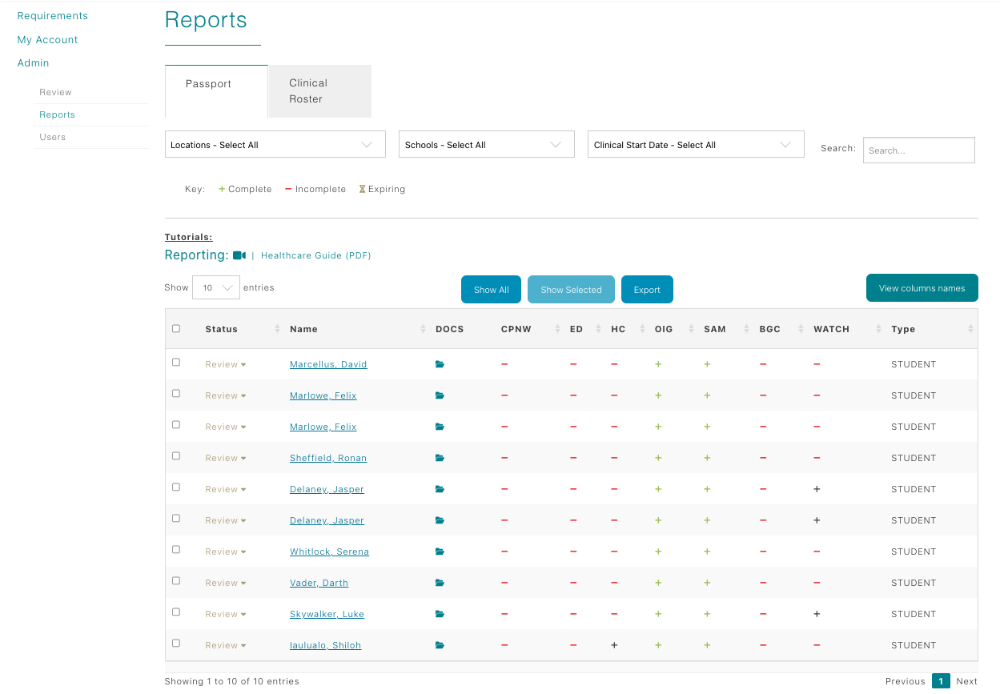
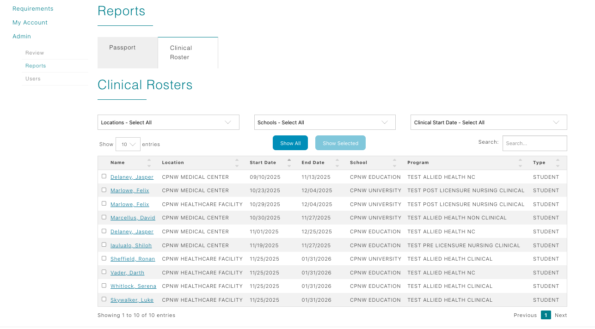

Healthcare Coordinator Guide
Reports & Clinical Rosters
Track incoming rotations through Passport and Clinical Roster tabs— approve placement assignments, check requirement icons, and confirm schedule details.

Timing of student visibility
- Students and faculty appear in the Reports view six weeks prior to their assignment start date.
- Two weeks after the assignment end date, the record automatically drops off both tabs so you only see active or near-term rotations.
Passport tab overview
The Passport tab is your central compliance dashboard. Each column communicates a different status:
- Approve/Reject column (far left): click to accept or decline a clinical rotation assignment directly from the table. When rejecting an assignment, please provide a rejection reason so the student will know what to complete to be back in compliance. Once a student resolves any issues, you can change this back to accepted.
- Student Name: opens the student’s contact panel with phone, email, program, and cohort details.
- Docs: launches the student’s document folder containing every upload from Clinical Passport, education, and healthcare requirements.
- CPNW / ED / HC: each column displays an icon representing the overall requirement completion status for Clinical Passport, education, and healthcare requirements respectively. A “+” icon means every requirement is complete, a "-" icon represents at least one incomplete requirement remains; click it to open a popup with individual requirement statuses so you know what's missing at a glance.
- OIG & SAM: show screening outcomes pulled from the education review. Green icons confirm the student is cleared; other icons indicate follow-up may be required.
- BGC & WATCH: report the status of the background check (independent vendor or Checkr) and WATCH check (independent or CPNW WATCH service).
- Type: identifies whether the record is a student or faculty member.
Clinical Roster tab
Switch to the Clinical Roster tab to view a schedule-centric grid for every confirmed placement:

- Columns include Student Name, Assignment Location, Start Date, End Date, School, Program, and Account Type.
- Use this table as your working roster for preceptor assignments, and orientation planning.
- Remember the six-week visibility rule: if a student isn’t shown yet, their rotation is still outside the reporting window.
Tips for keeping tabs on compliance
- Filter or export from the Passport tab to share status updates with unit stakeholders or educators.
- If you see a “-” icon in CPNW/ED/HC columns, this represents that there is at least one incomplete requirement. You can click on the "-" to view the status of each individual requirement in a popup window.
- Leverage the Docs folder to double-check paperwork before approving the assignment.